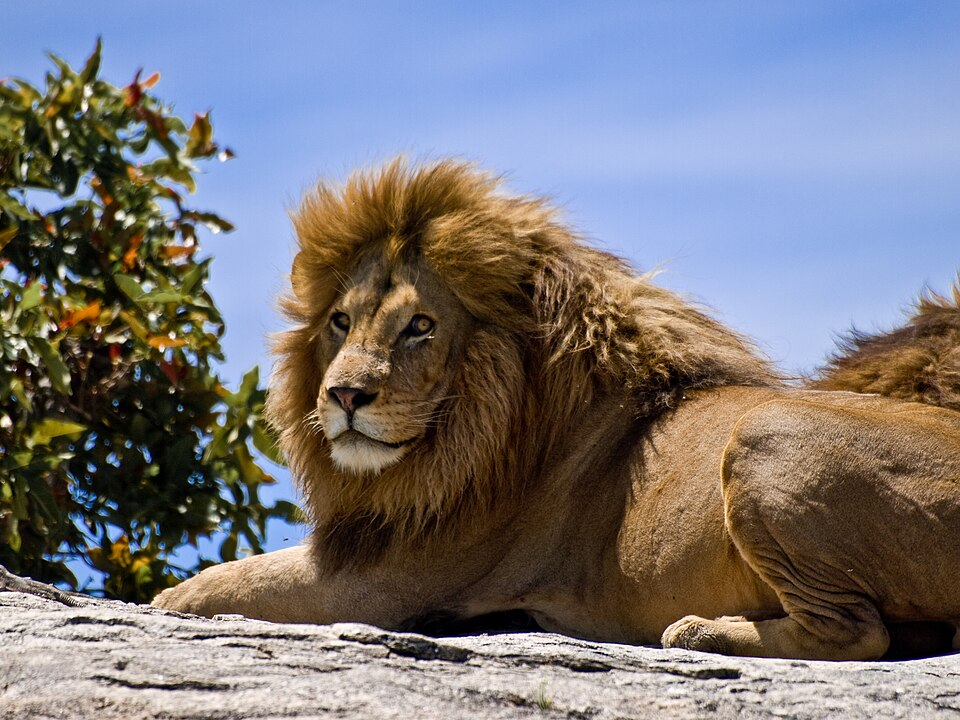

რა არის ველური ცხოველები?
ველური ცხოველები ცხოვრობენ ბუნებაში და არ არიან მოშინაურებული. ისინი ეკოლოგიური ბალანსის მნიშვნელოვანი ნაწილია.
ლომი არის აფრიკის ძლიერი მტაცებელი, რომელსაც ხშირად „ცხოველების მეფედ“ მოიხსენიებენ.
მისი სხეულის სიგრძე (ხვადისა) 180-240 სმ, მასა 180-227 კგ აღწევს. ძუ ტანად ხვადზე უფრო პატარაა. ლომს აქვს ძლიერი მოქნილი სხეული, მასიური თავი, გრძელი დინგი, შავი ფუნჯით დაბოლოებული გრძელი კუდი. მოზრდილ ხვადს ფაფარიც აქვს, დანარჩენი ბალანი მოკლეა და მოყვითალო. ბოკვერი ხალებიანია. ცნობილია ლომის 2 ქვესახეობა - აფრიკული და აზიური.

ველური ცხოველები ცხოვრობენ ბუნებაში და არ არიან მოშინაურებული. ისინი ეკოლოგიური ბალანსის მნიშვნელოვანი ნაწილია.